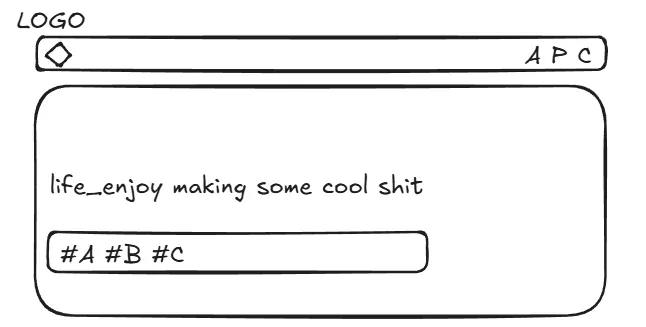

A log of building this personal site (v1.0). I moved from heavily packaged CMS platforms like WordPress to a hand-written static stack — HTML, CSS, JS — hosted on GitHub Pages. The point was to take back control of the underlying structure and keep the door open for extension.
WordPress is a ready-made site builder — drag-and-drop in an admin panel and you're live, but the underlying stack is locked in and hard to customize. This project switches to writing HTML / CSS / JavaScript directly, deployed on GitHub Pages (a free static hosting service that publishes whatever you push to a GitHub repo). The build uses the VibeCoding workflow: the developer owns the architecture and logic decisions, the AI agent writes the actual code.
Layout to deployment, everything ran on VibeCoding with an AI agent as co-developer.
This version is a basic static presentation layer. Future iterations will refine the structure and tune performance as I find reasons to.
# Architecture: Modules and Component Separation
During the early Excalidraw planning phase, I wanted the code to stay maintainable. So I pulled global blocks like Navbar and Footer out as standalone components, mounted dynamically with plain JavaScript.
This directory structure follows Separation of Concerns — pages stay loosely coupled, and adding new pages or unifying changes later stays cheap.

# Workflow and AI-Assisted Debugging
Automation tools dropped the syntax barrier hard. My focus shifted from remembering syntax to designing system logic.
I owned the core business logic and interface structure. The AI agent handled the implementation. Effective collaboration came down to two things on my side: asking precise questions, and keeping the global picture in my head.
From those iterations, two practical rules stuck:
-
Context Window Management:
When a single conversation thread runs too long, the AI's context window overflows. Code hallucinations show up. Fix attempts diverge — classic "the more it tries, the worse it gets." The right move is to set a clear breakpoint, open a new conversation, and inject a clean snippet of target code to reset the AI's state. -
Decision Authority Stays With the Human:
The AI generates code fast. Architecture decisions and trade-off calls stay with me. I keep logic ownership, pair with Live Server for instant rendering feedback, and run a tight loop: prompt → visual check → logic adjustment.
Archived Projects Info


- Earlier CMS-based sites I built, kept here as a baseline reference for how the web work has evolved:
- ● 2024.03 NTOU Tropical Biology Club official site (WordPress)
- ● 2024 HSVI Yōya Studio official site (WordPress)